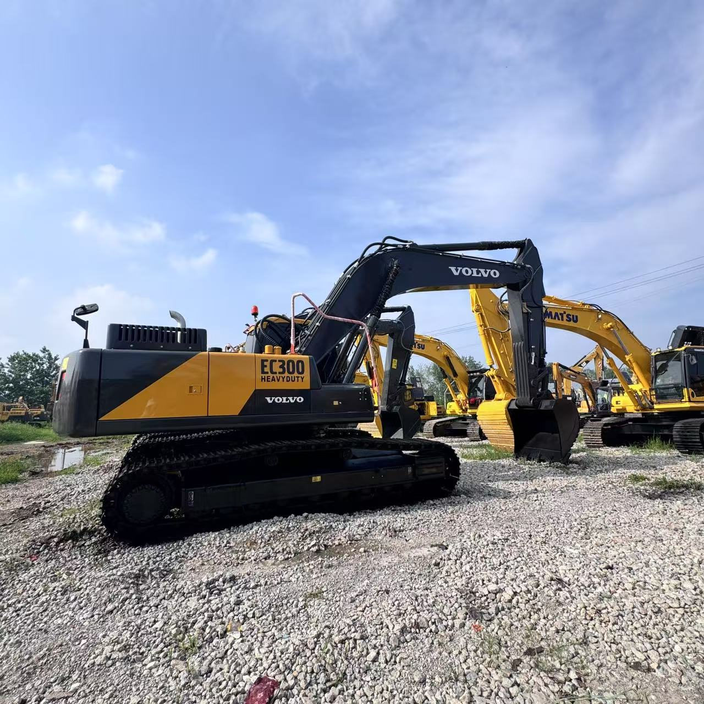

Refurbished Volvo EC300 Excavator
The Volvo EC300 is a robust and versatile tracked excavator designed to handle a variety of heavy-duty construction and excavation tasks. Known for its exceptional performance, fuel efficiency, and operator comfort, the EC300 has earned a reputation as a reliable workhorse in the construction industry. A refurbished Volvo EC300 offers a cost-effective alternative for businesses looking to acquire a high-performance machine without the premium price tag associated with new equipment.
Honestly, it's almost impossible to buy a brand new excavator from China. They either don't exist or are made in China. If a Chinese seller tells you their Caterpillar/Komatsu/Volvo/Kobelco/Hitachi is brand new, they're lying. Therefore, a refurbished excavator is your best bet.

Here are the detailed specifications for a refurbished Volvo EC300DL or EC300E excavator:
Operating Weight and Dimensions
- Operating Weight: 30,200–31,500 kg
- Transport Length: ~11.1–11.3 meters
- Transport Width: ~3.2–3.3 meters
- Transport Height: ~3.2–3.4 meters
- Tail Swing Radius: ~3.5–3.7 meters
- Ground Clearance: ~470–500 mm
- Track Width: 600 mm standard
Engine and Powertrain
- Engine Model: Volvo D8H (EC300DL) or D8J (EC300E)
- Rated Power Output:
- EC300DL: ~169 kW (227 hp) @ 1,800 rpm
- EC300E: ~180 kW (241 hp) @ 1,800 rpm
- Maximum Torque: ~1,100–1,200 Nm
- Fuel Tank Capacity: ~550–600 liters
- Travel Speed: 3.0–5.0 km/h
- Swing Speed: ~9.0 rpm
- Gradeability: Up to 35°
Hydraulic System
- Main Pump Type: Electro-hydraulic system with intelligent flow control
- Flow Rate: ~2 × 300–320 L/min
- System Pressure: Up to 34.3 MPa
- Hydraulic Oil Capacity: ~400–450 liters
- Boom/Arm/Bucket Priority: Programmable for faster cycle times
- Regeneration System: Prevents cavitation and improves simultaneous operations
Performance Metrics
- Bucket Capacity: 1.4–2.1 m³ (SAE heaped)
- Max Digging Depth: ~7.2–7.5 meters
- Max Reach (Horizontal): ~10.8–11.2 meters
- Max Dump Height: ~6.8–7.0 meters
- Bucket Digging Force: ~180–190 kN
- Arm Digging Force: ~130–140 kN
Cab and Operator Features
- Cab Type: ROPS/FOPS certified
- Display: LCD monitor with diagnostics, fuel tracking, and work mode selector
- Controls: Electro-hydraulic joysticks with customizable sensitivity
- Comfort: Air suspension seat, climate control, low vibration cab
- Visibility: Rear-view camera, wide glass area, LED work lights
Smart Features and Efficiency
- Fuel Efficiency:
- Auto idle and engine shutdown
- ECO mode with load-sensing hydraulics
- Work mode selector: I (Idle), F (Fine), G (General), H (Heavy), P (Power Max)
- Emissions Control:
- EC300DL: Tier 3 (no DPF/SCR)
- EC300E: Tier 4 Final (DPF + SCR + EGR)
- Telematics Ready: Volvo CareTrack system for remote diagnostics and fleet tracking
Attachments Compatibility
- Standard Bucket: 1.4–2.1 m³
- Optional Tools: Hydraulic breaker, demolition shear, compactor, ripper
- Quick Coupler: Hydraulic or manual options available
Refurbishment Scope
Refurbished EC300 units typically include:
- Engine Overhaul: Turbocharger, injectors, seals, cooling system
- Hydraulic Restoration: Pump recalibration, valve block testing, hose replacement
- Electrical Diagnostics: Monitor, sensors, wiring harness
- Cab Reconditioning: Seat, joysticks, HVAC, repainting
- Structural Repairs: Boom/bucket welding, bushing replacement, undercarriage rebuild
Overview of the Volvo EC300 Excavator
The Volvo EC300 is part of Volvo's EC series of hydraulic excavators, which are known for their performance, strength, and advanced technology. With a powerful engine, advanced hydraulics, and a durable frame, the EC300 is suitable for a wide range of applications, including road construction, site preparation, material handling, and more.
Key Specifications of the Volvo EC300
-
Operating Weight: Approximately 30,000–34,000 kg (66,000–75,000 lbs)
-
Engine Power: 164 kW (220 hp)
-
Max Digging Depth: Up to 7.3 meters (24 feet)
-
Max Reach: Approximately 10.5 meters (34.4 feet)
-
Bucket Capacity: Typically 1.0–1.6 cubic meters (35–56 cubic feet)
-
Fuel Tank Capacity: Around 400 liters (105 gallons)
-
Travel Speed: Up to 5.6 km/h (3.5 mph)
These specifications reveal that the Volvo EC300 is designed for heavy lifting, deep digging, and general excavation tasks. Its lifting and digging capacities make it suitable for a variety of industries and project types.
Engine and Performance Efficiency
The Volvo EC300 is powered by a Volvo D6E engine that combines performance with fuel efficiency.
-
Engine Power: With 164 kW (220 hp) of power, the EC300 is designed to perform demanding tasks, such as digging, lifting, and material handling, with ease. The engine ensures that the machine can handle tough soil conditions, heavy materials, and continuous operation without sacrificing performance.
-
Fuel Efficiency: One of the standout features of the EC300 is its fuel efficiency. The machine uses Volvo’s advanced fuel-saving technology, such as electronic control systems and variable hydraulic pumps, to reduce fuel consumption and lower operating costs. This is essential for businesses that need to run the machine for extended periods while keeping costs down.
-
Emissions Compliance: The Volvo EC300 is built to meet modern environmental standards, ensuring that it operates efficiently while keeping emissions to a minimum. This makes it a viable option for operators in areas with stringent environmental regulations.
Hydraulics and Performance Capabilities
The Volvo EC300 is equipped with a highly efficient and powerful hydraulic system that enhances its digging, lifting, and general excavation performance.
-
Advanced Hydraulic System: The EC300 features a load-sensing hydraulic system that optimizes hydraulic flow and power, depending on the demand from the task. This not only increases the machine’s performance but also helps reduce fuel consumption.
-
Improved Cycle Times: The hydraulic system ensures fast and smooth operation, contributing to shorter cycle times and increased productivity. Whether you are lifting heavy materials or digging in tough soil, the EC300 provides the hydraulic power necessary for fast and efficient work.
-
Powerful Digging Force: The excavator's hydraulic system ensures powerful digging performance. It delivers impressive lifting and digging forces, allowing the EC300 to handle heavy-duty tasks with ease, from trenching to material lifting.
Durability and Construction
Volvo excavators are known for their durability and long service life, and the EC300 is no exception. Built to withstand tough working conditions, this machine is designed for optimal performance even in the most challenging environments.
-
Heavy-Duty Undercarriage: The EC300 features a durable undercarriage designed to withstand harsh conditions such as rough, uneven, and rocky terrain. The undercarriage provides excellent stability, ensuring that the machine maintains its balance and traction even on challenging surfaces.
-
High-Strength Steel Construction: Volvo uses high-strength steel in the construction of the EC300, ensuring that the machine can handle the rigors of daily work on job sites. This robust construction helps the machine resist wear and tear, reducing maintenance costs and extending its operational life.
-
Track System: The EC300 is equipped with a reliable and durable track system that provides superior traction in soft soil, mud, or steep inclines. This system ensures that the machine can move efficiently across difficult terrain without getting stuck or losing traction.
Operator Comfort and Safety
Volvo places a strong emphasis on operator comfort and safety, and the EC300 is equipped with a range of features designed to improve both.
-
Spacious and Comfortable Cab: The EC300 features a spacious and ergonomically designed operator cab that offers excellent visibility and comfort. The seat is adjustable, and the controls are designed for ease of use, ensuring that the operator can work for long hours without feeling fatigued.
-
User-Friendly Controls: The machine is equipped with intuitive and easy-to-use controls that allow the operator to adjust the boom, arm, and bucket with precision. The layout of the controls reduces the operator's need to reach or stretch, improving comfort and productivity.
-
Enhanced Visibility: The cab design offers clear visibility of the work area, including the boom and bucket, which helps reduce the risk of accidents or errors during operation. Additionally, the machine features wide windows and rearview cameras to enhance the operator's ability to monitor their surroundings.
-
Reduced Noise and Vibration: The operator cab is designed to minimize noise and vibration, helping to create a more comfortable working environment. This is essential for maintaining the operator’s focus and reducing fatigue, especially when working on longer shifts.
Benefits of Choosing a Refurbished Volvo EC300
Opting for a refurbished Volvo EC300 offers numerous advantages for businesses that need high performance at a more affordable price point.
-
Lower Initial Cost: A refurbished Volvo EC300 can save you 20-40% compared to purchasing a new unit. This makes it an ideal option for businesses that need high-quality equipment but are working within a budget.
-
High-Quality Refurbishment: Refurbished machines undergo a comprehensive inspection and restoration process, including checks of the engine, hydraulics, undercarriage, and electrical components. Replaced or repaired parts ensure that the machine performs like new, providing reliability and performance.
-
Warranty and Support: Many refurbished Volvo EC300 models come with a warranty that covers parts and labor, offering peace of mind to buyers. Additionally, service and maintenance support is often available to address any issues that may arise during operation.
-
Eco-Friendly Option: Purchasing a refurbished excavator is a more sustainable option compared to buying new equipment. It helps extend the life of an existing machine, reducing the demand for new manufacturing and minimizing environmental waste.
Maintenance Tips for the Volvo EC300
Regular maintenance is key to ensuring the longevity and optimal performance of the Volvo EC300. Here are a few essential maintenance tips:
-
Hydraulic System: Check hydraulic hoses and fittings for leaks and ensure hydraulic fluid is at the correct level. Replace hydraulic filters as needed.
-
Engine and Fuel System: Regularly change engine oil and filters, and ensure that air filters are clean to prevent dust buildup. Maintain the fuel system by checking fuel lines and filters.
-
Undercarriage: Inspect the undercarriage for wear and tear, including the tracks, rollers, and sprockets. Keep the undercarriage clean and free from debris to prevent premature wear.
-
Electrical Systems: Regularly inspect wiring and connections for corrosion or damage. Ensure the battery is in good condition and maintain proper charge levels.
-
General Inspections: Periodically check the cooling system, exhaust system, and other critical components to prevent issues before they become serious problems.
Conclusion
The Volvo EC300 is a powerful, durable, and versatile excavator that excels in a wide range of heavy-duty applications. Whether used for digging, lifting, or grading, the EC300 offers consistent performance and reliability, making it a valuable asset to any job site. A refurbished Volvo EC300 offers significant cost savings while retaining the high-quality performance expected from Volvo equipment. With proper maintenance and care, the EC300 can continue to deliver exceptional results for years to come, making it a smart investment for businesses looking to maximize their equipment’s value.
Our Commitment
- 2 years / 4000 hours warranty.
- EPA certified.
- No sweatshop labor.
Contacts

- [email protected]
- Youtube Instagram Facebook
- Navigation: G206 (Sishu Bridge) in Changfeng County, Hefei City, Anhui Province, 200 meters north to the east